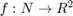
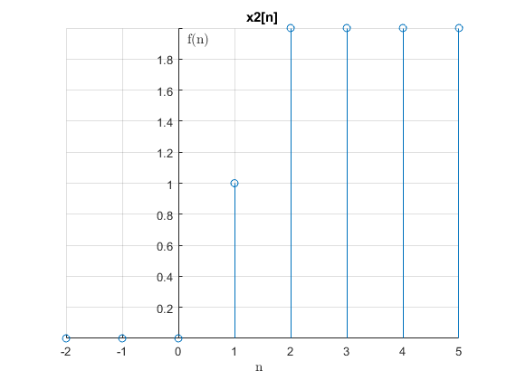

Práctica 3: Señales en tiempo discreto
Caudillo Barbosa Eric Olea García Bryan
Contents
- Objetivos
- Introducción
- Crea una función que se llame fun1 y reciba dos parametros y la función debe regresar la evaluación , esta función debe trabajar con , y .
- Construya una función que gráfique funciones de en el formato de su elección y pruebe su código mostrando la gráfica de vs para para
- Construya una función que gráfique funciones de  en el formato de su elección y pruebe su código mostrando la gráfica de la función exponencial del primer problema, no debe incluir el código, solo el uso de la función para mostrarla gráfica. Reporte la gráfica de para , y (recuerde que ya tiene una función para esto). Reporte la gráfica de vs y vs
Objetivos
- Manipulación básica de MATLAB
- Gráficas de señales reales y complejas discretas
- Transformación de señales discretas (escalamientos y traslaciones)
- Calculo de energía y potencia de señales discretas
Introducción
DESCRIPTIVE TEXT
Crea una función que se llame fun1 y reciba dos parametros y la función debe regresar la evaluación , esta función debe trabajar con , y .
function f= fun1( W,n,r ) f=(r.^n.*cos(W.*n))+(r.^n.*sin(W.*n).*i); end
Construya una función que gráfique funciones de en el formato de su elección y pruebe su código mostrando la gráfica de vs para para
f=@(n,a) (n.*a.^n).*heaviside(n); n=-2:10; Gd2(n,f(n,0.9))
Construya una función que gráfique funciones de en el formato de su elección y pruebe su código mostrando la gráfica de la función exponencial del primer problema, no debe incluir el código, solo el uso de la función para mostrarla gráfica. Reporte la gráfica de para , y (recuerde que ya tiene una función para esto). Reporte la gráfica de vs y vs
n=-2:20; Gd3(n,real(fun1(0.5,n,1.1)),imag(fun1(0.5,n,1.1))) subplot(1,2,1) plot(n,abs(fun1(0.5,n,1.1))) subplot(1,2,2) plot(n,atan2(fun1(0.5,n,1.1)))
Error using atan2 Not enough input arguments. Error in Practica3 (line 29) plot(n,atan2(fun1(0.5,n,1.1)))